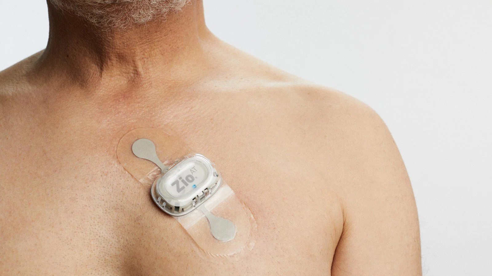

S-Patch Monitoring System
S-Patch Cardiac Monitoring System
The S-Patch cardiac monitoring system is Specialized Medical’s primary wearable platform for ambulatory ECG monitoring. Its compact two-component design is intended to provide a practical alternative to traditional multi-lead systems while supporting several prescribed monitoring services. The monitor communicates with a connected smartphone, which serves as the gateway for data transmission when live connectivity is part of the study.
S-Patch System Overview
The S-Patch uses a two-disk wearable configuration worn on the chest with a connected phone. Current internal specifications indicate Disk 1 is approximately 1.57 inches in diameter by 0.40 inches thick and Disk 2 is approximately 1.41 inches in diameter by 0.24 inches thick. All technical specifications are verified before publication.
Exact battery performance depends on configuration and use. Specific battery-life durations are published only for validated and released product configurations.

Monitoring Services Supported
The platform can be used within Holter, Extended Holter, Event, and MCT workflows depending on the prescribed configuration. A single study does not simultaneously function as all four tests — the prescription determines the configuration.
The workflow changes between live and non-live studies: when live connectivity is prescribed (for example, live ECG monitoring within MCT), the connected phone transmits during the study. For Holter-type studies, the recording is analyzed after completion, with clinical results presented after the final report is generated. Every configuration retains LIVE test-status visibility while the study is in progress.
Connectivity and Phone Requirements
The monitor connects to the phone by Bluetooth, with an operating distance of approximately 30 feet under favorable conditions. Patients should keep the phone close, powered, and charged. Absolute range is not guaranteed because walls, body position, interference, and environment can affect performance.
Multi-path cellular connectivity means the phone uses available network pathways to transmit when possible, helping support use across varied coverage environments.
- S-Patch monitorECG acquired on the chest
- Bluetooth (~30 ft under favorable conditions)Monitor pairs with the connected phone
- Multi-path cellular / networkPhone transmits when connectivity is available
- Monitoring platformData received and processed
Device Care and Patient Use
- Follow the exact bathing instructions supplied with the monitor — do not treat the system as waterproof unless the configuration is verified for that use
- Follow adhesive-care instructions and report significant skin irritation
- Keep the phone charged and follow any device charging procedures for the study
- Record symptoms through the connected phone or other provided method when the workflow includes symptom recording
- If the monitor or phone disconnects, bring them near each other, confirm the phone is powered, and follow the troubleshooting instructions or contact support
- Do not attach the device directly to skin electrodes unless the approved setup specifically requires it
- Avoid long power-button presses that may turn off the phone
| Issue | What to do |
|---|---|
| Phone not charging | Check the charger and cable, use a working outlet, and keep the phone powered; contact support if charging does not resume. |
| Bluetooth disconnected | Bring the phone near the monitor, confirm the phone is powered on, and follow the reconnection instructions. |
| Network disconnected | Transmission resumes when connectivity returns; move to an area with coverage when practical. |
| Monitor detached | Follow the reattachment or replacement instructions provided with the study, or contact support. |
| Skin irritation | Contact the practice or support team; sensitive-skin options or electrode rotation may be available depending on configuration. |
| Missing ECG trace | Check device placement and phone connection, then contact support if the trace does not return. |
| Unsure about study status | Contact the support number in the patient instructions; Specialized Medical maintains LIVE test-status visibility and may also reach out. |
Emergency symptoms
Patients with chest pain, severe shortness of breath, fainting, stroke symptoms, or other urgent symptoms should follow their physician’s instructions and seek emergency assistance — call 911 — rather than waiting for a monitoring call.
S-Patch and Lead-Wire Options
The S-Patch is the primary wearable option, and a lead-wire system is available as an alternative when a different configuration is needed. Both are supported service configurations — neither is disparaged. Differences in channels, wear style, battery routines, patient comfort considerations, and use cases are compared only with verified specifications during program setup.

Frequently Asked Questions
It is Specialized Medical’s primary wearable ambulatory ECG platform used within selected Holter, Event, and MCT workflows.
A connected phone is used as the transmission gateway when the prescribed workflow requires data transmission.
The phone should remain near the patient and within the range stated in the patient instructions. Approximately 30 feet may be possible under favorable conditions, but range varies.
Patients should follow the exact bathing instructions supplied with their monitor. The system should not be treated as waterproof unless the specific configuration is verified for that use.
Battery performance depends on the study configuration, transmission demands, and operating conditions. Only verified duration claims are published.
Yes, when configured as part of the prescribed MCT service.
Bring the phone near the monitor, confirm the phone is powered, and follow the troubleshooting instructions or contact support.
Contact the practice or support team for instructions. Sensitive-skin options or electrode rotation may be available depending on the configuration.
Yes, when the prescribed workflow includes symptom recording through the connected phone or other provided method.
Use the support contact provided by the ordering practice or in the patient instructions.
Request an S-Patch Demonstration
Specialized Medical can review the practice’s current ambulatory cardiac monitoring workflow, explain the available service options, and demonstrate how enrollment, monitoring, reporting, and physician review can be configured.
Prefer to talk? Speak With a Cardiac Monitoring Specialist — 1-855-SPEC-MED (1-855-773-2633)
Related Cardiac Monitoring Resources
Diagnostic Service Disclaimer: Specialized Medical provides ambulatory cardiac monitoring services and diagnostic information for review by qualified healthcare providers. The service does not replace physician judgment, emergency medical services, or instructions to call 911 when urgent symptoms occur.